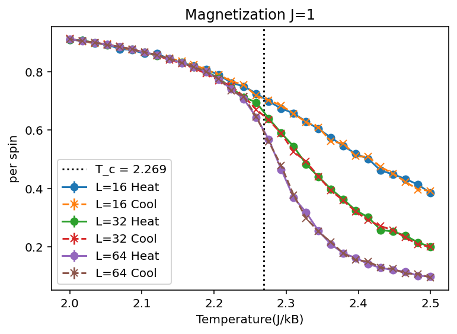
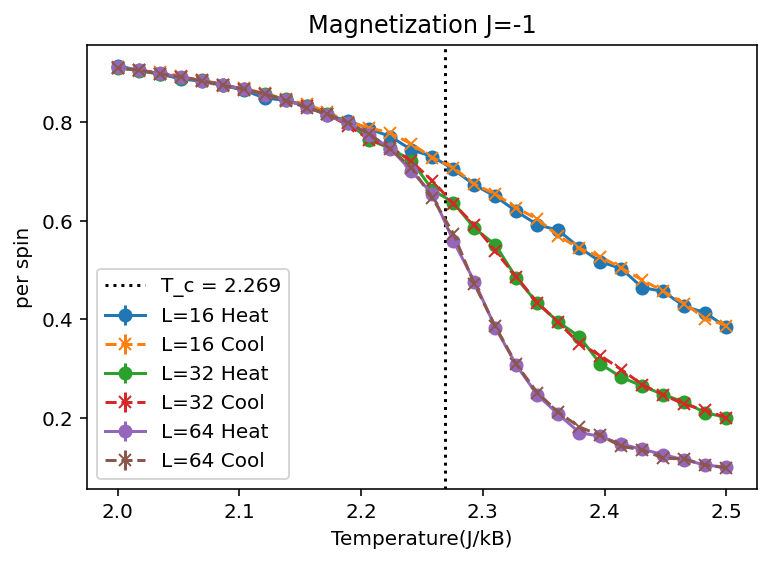
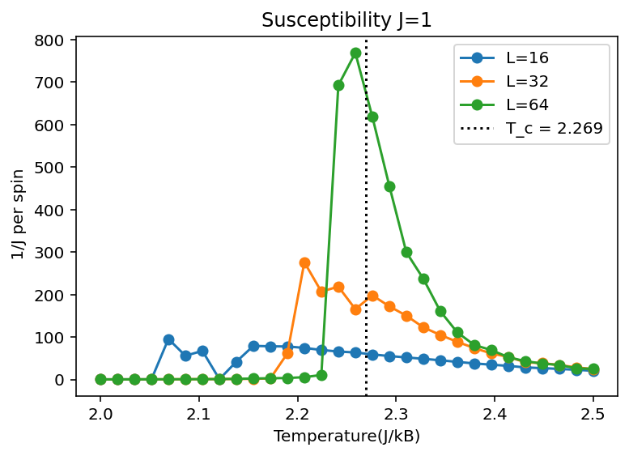
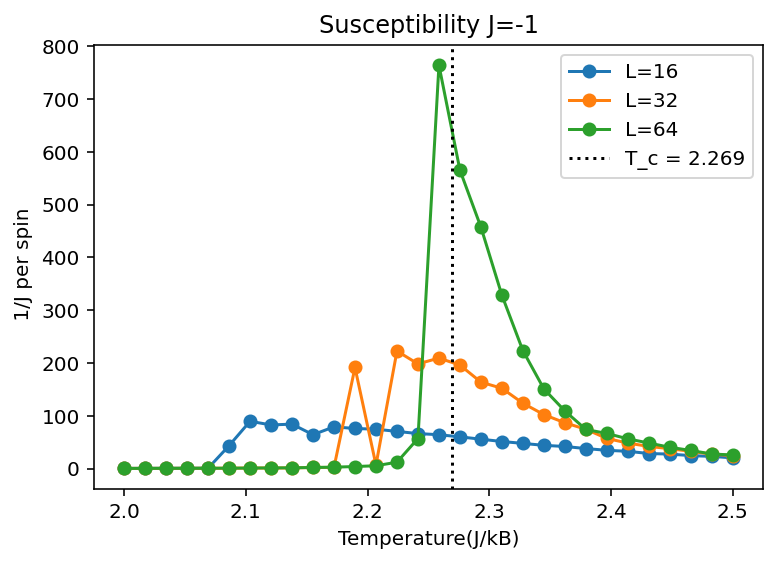
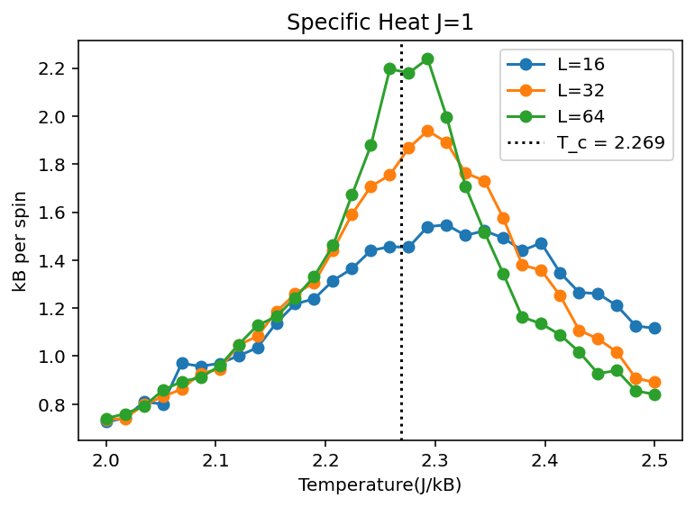
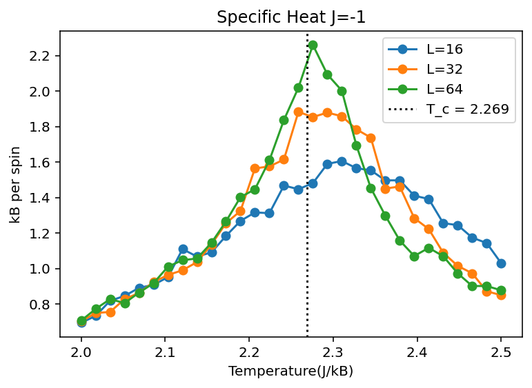
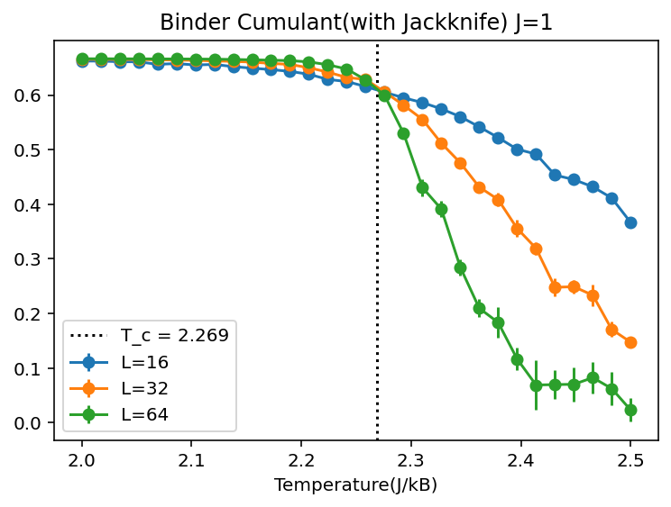
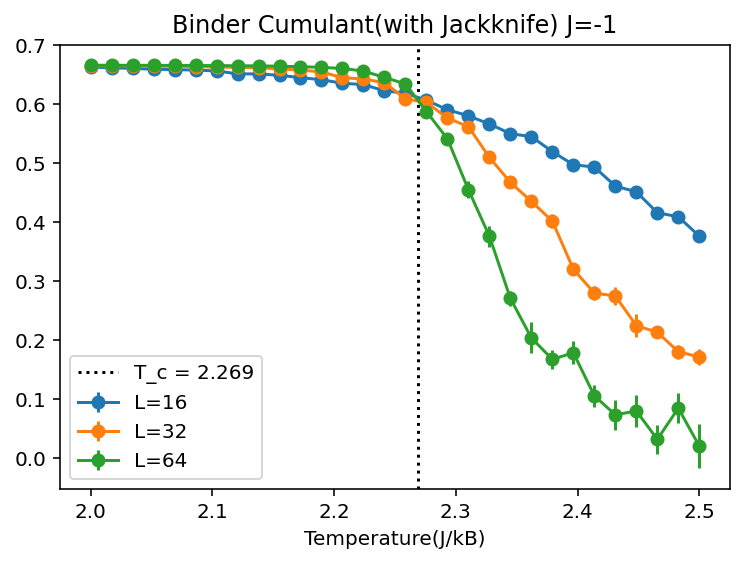
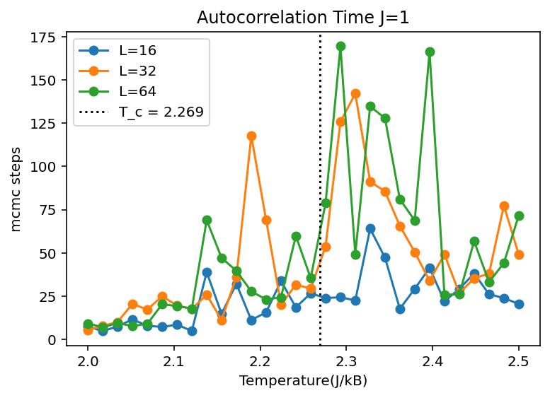
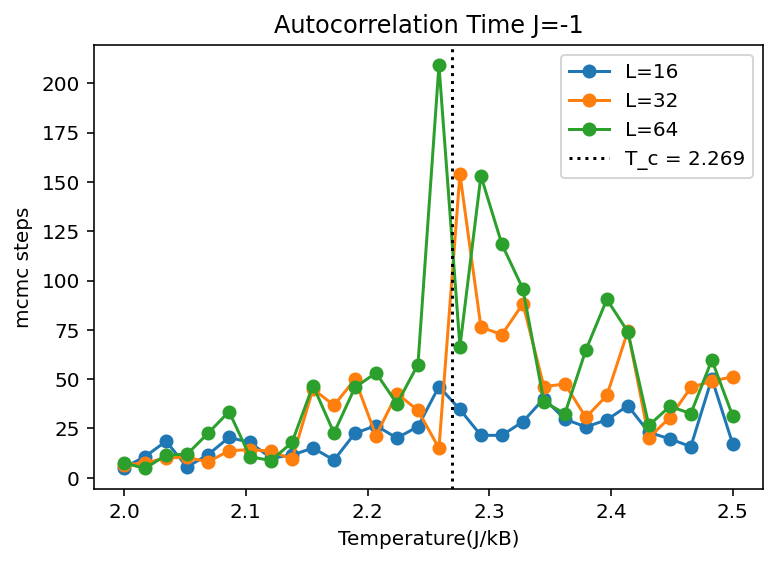

A. 磁化強度曲線 (Magnetization)


物理意義
磁化強度是相變的序參數（Order Parameter）。它描述了系統從「微觀有序（低溫）」走向「微觀無序（高溫）」的轉變過程。
軸向代表
橫軸為溫度 \(Temperature (J/k_B)\)；縱軸為平均每自旋的磁化量（\(J=1\) 為絕對磁化強度，\(J=-1\) 為交錯磁化強度）。
數據趨勢解析
- 在低溫區 (\(T < T_c\))，自旋受耦合能 \(J\) 主導，呈現鐵磁（或反鐵磁）自發對齊，磁化強度接近飽和值 \(1\)。
- 當溫度逼近 \(T_c \approx 2.269\) 時，曲線急遽下滑。這是環境熱擾動（\(k_B T\)）開始對抗自旋間有序耦合的結果。
- 在高溫區 (\(T > T_c\))，熱擾動完全主導，自旋雜亂無章，磁化強度趨近於 \(0\)。
尺寸效應與升降溫
晶格尺寸 \(L\) 越大，曲線在 \(T_c\) 處的下跌越陡峭。同時加熱與降溫曲線近乎完全重合，說明二維伊辛模型相變屬於連續相變（二級相變），系統沒有顯著的「滯後現象（Hysteresis）」。
B. 磁化率曲線 (Susceptibility \(\chi\))


物理意義
磁化率代表系統自旋對外界微小擾動的無窮小響應。在統計力學中，它直接正比於磁化強度的漲落（Fluctuation）。
軸向代表
橫軸為溫度；縱軸為無因次磁化率（\(1/J \text{ per spin}\)）。
數據趨勢解析
- 在低溫和高溫極限下，自旋結構相對穩定，漲落極小，因此 \(\chi \to 0\)。
- 在臨界點 \(T_c\) 附近，曲線爆發性出現尖峰（Peak）。這在物理上稱為臨界漲落（Critical Fluctuations），微小的熱擾動就能讓大範圍的自旋集體翻轉。
有限尺寸縮放
隨晶格尺寸 \(L\) 從 \(16 \to 32 \to 64\)，尖峰高度顯著攀升，且位置向真實的 \(T_c = 2.269\) 靠攏，符合有限尺寸縮放理論。
C. 比熱曲線 (Specific Heat \(C_v\))


物理意義
比熱代表系統內能隨溫度的變化率，本質上對應於能量的漲落（Energy Fluctuation）。
軸向代表
橫軸為溫度；縱軸為單個自旋的比熱貢獻（\(k_B \text{ per spin}\)）。
數據趨勢解析
比熱在 \(T_c\) 附近展現出尖峰行為，代表系統在相變點附近需要吸收/釋放大量的能量來破壞/建立微觀有序結構。
隨著 \(L\) 增大，比熱峰值明顯增高。Onsager 精確解指出比熱呈對數發散（Logarithmic Divergence），模擬完美再現了這一趨勢。
D. Binder 累積量 (Binder Cumulant \(U_4\))


物理意義
這是統計物理中用來精確確定臨界溫度 \(T_c\) 最強大的工具。它排除了晶格大小有限帶來的平滑化干擾。
軸向代表
橫軸為溫度；縱軸為無因次量 \(U_4\) 的值。
數據趨勢解析
- 在低溫高度有序相中，磁化強度分佈接近高斯雙峰（或單峰），\(U_4 \to 2/3 \approx 0.667\)。
- 在高溫無序相中，磁化強度分佈回歸標準高斯分佈，\(\langle M^4 \rangle = 3 \langle M^2 \rangle^2\)，因此 \(U_4 \to 0\)。
交點的物理真諦
不論 \(L=16, 32, 64\)，所有曲線在 \(T \approx 2.269\) 附近精準交於一點（約 \(0.61\)）。這個絕妙的交點宣告了真實臨界溫度 \(T_c\) 的存在，證明代碼與 Jackknife 誤差線非常精確。
E. 自相關時間曲線 (Autocorrelation Time \(\tau\))


物理意義
描述連續兩個 MCMC 抽樣點之間互相遺忘、達成獨立所需的時間（步數）。
軸向代表
橫軸為溫度；縱軸為 MCMC 步數（\(mcmc \text{ steps}\)）。
數據趨勢解析
在外圍溫度，\(\tau\) 非常小（\(< 20\) 步），數據很快就失去相關性。但在 \(T_c\) 附近，\(\tau\) 劇烈飆升（稱為臨界變慢 Critical Slowing Down）。相變時相關長度發散，微觀自旋集團需要極長時間才能更新。
圖形鋸齒波動成因
臨界變慢使得數據高度相關，導致 \(\tau\) 的估算產生較大的統計噪聲（鋸齒狀波動）。這正是代碼中引入動態 thinning 與 Jackknife 誤差估計的最核心用意。